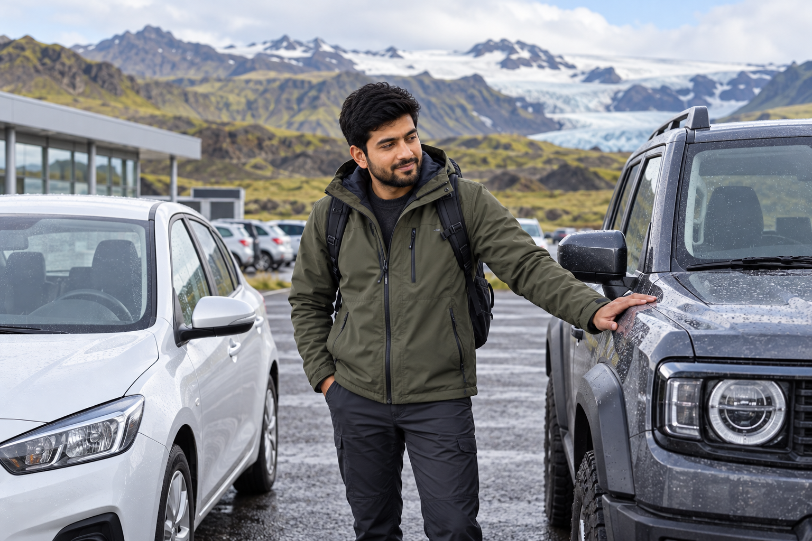
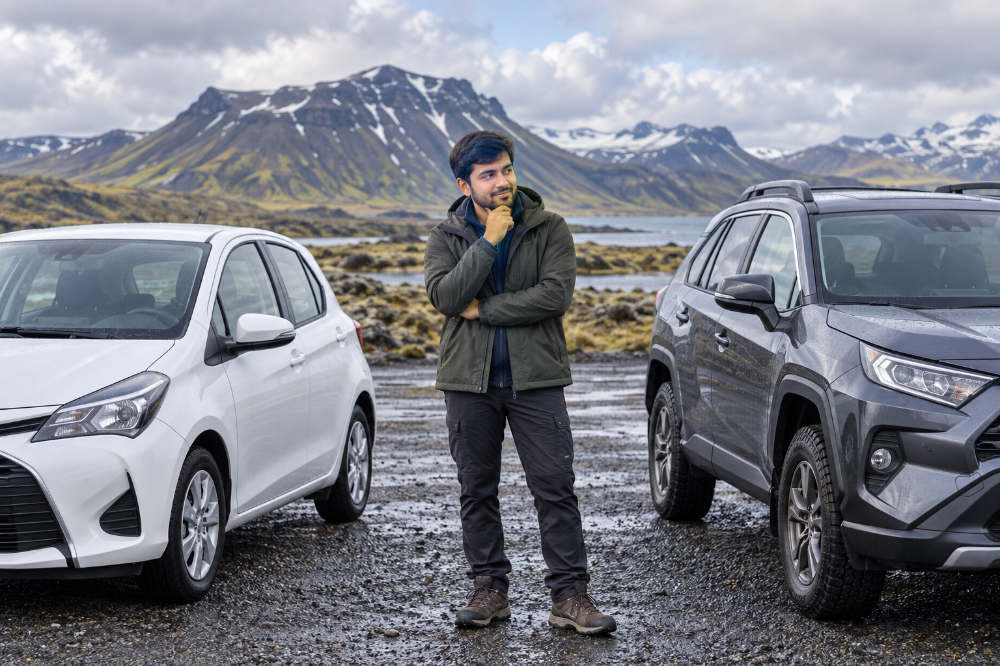

Renting a Car in Iceland: 2WD vs 4WD, Insurance and Costs
Renting a car is one of the easiest ways to explore Iceland independently, but choosing the right vehicle is more important than simply finding the lowest daily rate. A small 2WD can be perfectly suitable for Reykjavík, the Golden Circle, South Coast, and much of the Ring Road in favorable conditions. A 4WD becomes more useful when winter conditions, rougher roads, or specific Highland routes enter the plan.
The expensive mistake is either renting far more vehicle than you need or booking the cheapest small car first and discovering later that it does not suit your route. The best rental choice depends on your travel month, road type, number of passengers, luggage, driving experience, and whether you intend to use F-roads.
This guide will help you choose between 2WD and 4WD, understand Iceland car-rental insurance, estimate the real cost of a rental, and avoid add-ons or vehicle upgrades that do not improve your trip.
2WD vs 4WD in Iceland: Quick Answer

For many first-time summer trips:
2WD is enough.
Consider a 4WD when:
- ✓You are traveling in winter
- ✓Your route includes permitted F-roads
- ✓You want more ground clearance
- ✓You expect rougher regional roads
- ✓Weather conditions make additional traction useful
But a 4WD does not mean:
- ✓Every F-road is suitable
- ✓River crossings are safe
- ✓Closed roads become legal
- ✓Ice stops being dangerous
- ✓You can drive off-road
SafeTravel specifically warns that even among 4WD vehicles, suitability varies significantly between Highland routes.
2WD vs 4WD Comparison

| Question | 2WD | 4WD |
|---|---|---|
| Reykjavík | Excellent | Usually unnecessary |
| Golden Circle | Usually enough | Optional |
| South Coast | Usually enough in favorable conditions | Useful in harder winter conditions |
| Standard Ring Road | Often enough in summer | Useful in winter/shoulder season |
| Snæfellsnes main roads | Often enough | Useful depending on conditions |
| F-roads | No | Required, but vehicle suitability still varies |
| River crossings | Not appropriate | Only some capable 4WDs, with major risk |
| Fuel use | Usually lower | Usually higher |
| Rental price | Usually lower | Usually higher |
| Luggage/space | Depends on model | Often more room |
| Strong wind | Smaller profile can help | Large SUVs may still be affected |
| Winter traction | Depends heavily on tires | Can provide additional traction |
The important word in this table is:
conditions.
Vehicle category alone never tells the full story.
Start with Your Route, Not the Rental Website
Do not begin by browsing cars.
Begin by writing down:
- ✓Month
- ✓Regions
- ✓Roads
- ✓Passengers
- ✓Luggage
Then choose the vehicle.
For example:
Trip A
- ✓July
- ✓Reykjavík
- ✓Golden Circle
- ✓South Coast
- ✓Jökulsárlón
- ✓Two adults
A normal 2WD can often be completely appropriate.
Trip B
- ✓February
- ✓South Coast
- ✓Snæfellsnes
- ✓Several rural nights
A 4WD may be a more sensible choice.
Trip C
- ✓July
- ✓Landmannalaugar
- ✓Highland F-roads
You need to investigate:
- ✓Exact F-road
- ✓Vehicle class permitted
- ✓River crossings
- ✓Rental-company restrictions
Simply booking a generic “4x4” is not enough.
When a 2WD Is Usually Enough
Visit Iceland's current transport guidance states that small 2WD vehicles are suitable for most major routes during summer.
That includes many first-time itineraries centered on:
- ✓Reykjavík
- ✓Golden Circle
- ✓South Coast
- ✓Major paved roads
- ✓Standard Ring Road
A 2WD makes particular sense when your trip stays on:
normal paved tourist routes.
2WD for Reykjavík
You do not need 4WD for Reykjavík.
In fact, you may not need a rental car at all if you are spending:
- ✓One
- ✓Two
days only in the city.
Central Reykjavík is compact enough that:
- ✓Walking
- ✓Public transport
can handle much of a city stay.
If your road trip begins later, compare:
airport rental for the entire trip
with:
airport transfer + Reykjavík rental pickup later.
Sometimes you can avoid paying for a parked rental car.
2WD for the Golden Circle
In favorable road conditions, a normal 2WD is usually sufficient for the standard Golden Circle route.
The main first-time stops are:
- ✓Þingvellir
- ✓Geysir
- ✓Gullfoss
These do not require an F-road vehicle.
If your Golden Circle itinerary stays on:
- ✓Main roads
- ✓Normal attraction access roads
you should not rent a large 4WD simply because the landscape looks remote.
2WD for the South Coast
The classic South Coast route includes:
- ✓Seljalandsfoss
- ✓Skógafoss
- ✓Reynisfjara
- ✓Vík
- ✓Skaftafell
- ✓Jökulsárlón
A summer trip following the standard roads does not automatically require:
4WD.
The decision changes if:
- ✓Winter conditions develop
- ✓You add rougher detours
- ✓Weather is poor
But for a normal summer first-time route, a small or medium 2WD is often enough.
2WD for the Ring Road
A first-time summer Ring Road trip can often be completed in a normal 2WD.
The core Route 1 circuit does not require:
- ✓Highland F-roads
- ✓River crossings
This makes vehicle selection much simpler.
If you are planning the full circuit, your priorities should be:
- ✓Comfortable seating
- ✓Enough luggage room
- ✓Reasonable fuel use
- ✓Suitable tires
- ✓Reliable vehicle
rather than automatically upgrading to the largest SUV.
You can see how the standard route fits together in Iceland 10-Day Itinerary: First-Time Ring Road Trip.
Why Renting a Smaller Car Can Be Better?
A bigger vehicle is not automatically a better rental.
A smaller car may give you:
- ✓Lower rental price
- ✓Lower fuel use
- ✓Easier Reykjavík parking
- ✓Easier handling
- ✓Less exposure to crosswinds than a tall vehicle
For two travelers with moderate luggage, a large SUV can be unnecessary.
Do Not Choose the Smallest Car Only by Price
The opposite mistake also happens.
A tiny economy car may technically seat:
four people
but that does not mean it comfortably holds:
- ✓Four adults
- ✓Four suitcases
- ✓Daypacks
- ✓Winter clothing
Look at:
usable luggage space, not only passenger capacity.
Choose One Size Above the Minimum When Necessary
If your group has:
- ✓Large suitcases
- ✓Camera equipment
- ✓Child seat
- ✓Winter clothing
a slightly larger 2WD can be a better choice than upgrading all the way to 4WD.
The choice is not simply:
tiny 2WD vs huge SUV.
There are many practical middle options.
When a 4WD Makes Sense
There are situations where paying more for 4WD is reasonable.
These include:
- ✓Winter
- ✓F-roads
- ✓Rougher gravel roads
- ✓Extra ground clearance
- ✓More demanding regional routes
The benefit is not prestige.
It is:
matching the car to the route.
4WD for Winter
A 4WD can provide additional traction on:
- ✓Snow
- ✓Slippery roads
which can be useful.
But tire quality and driving technique remain critical.
Do not think:
4WD = safe winter driving.
You still need to:
- ✓Slow down
- ✓Increase following distance
- ✓Check roads
- ✓Check weather
- ✓Respect closures
If you are not comfortable driving in snow and ice, upgrading from 2WD to 4WD may not solve the main problem.
A guided tour may be a better solution.
Winter Tires Matter More Than Many Travelers Realize
Your vehicle's ability to:
- ✓Accelerate
- ✓Turn
- ✓Stop
depends greatly on the tires.
A powerful 4WD on poor tires can still be a poor winter choice.
When booking a winter car, confirm that the rental vehicle will be equipped appropriately for:
current seasonal conditions.
4WD for Shoulder Season
Months such as:
- ✓April
- ✓May
- ✓September
- ✓October
can be harder to categorize.
You may experience:
- ✓Dry roads
- ✓Rain
- ✓Frost
- ✓Snow
- ✓Ice
within the same trip.
That means vehicle choice should consider:
- ✓Exact month
- ✓Route
- ✓Regional elevation
rather than relying only on the word:
spring
or:
autumn.
September Does Not Automatically Require 4WD
September can still work very well with 2WD on standard routes.
But weather becomes more variable later in the month.
If your plan includes:
- ✓Long Ring Road drive
- ✓North Iceland
- ✓Higher sections
a 4WD may provide additional confidence.
It is still not automatically required.
October Is More Weather-Dependent
By October, winter-like conditions become increasingly plausible.
This is where the question changes from:
“Can a 2WD drive this road?”
to:
“Which vehicle best matches the conditions I may actually encounter?”
A 4WD becomes more attractive, but the decision should still be based on:
- ✓Route
- ✓Forecast
- ✓Your experience
4WD for Rough Gravel Roads
Some regional roads are:
- ✓Gravel
- ✓Uneven
- ✓Rough
without being F-roads.
A vehicle with:
- ✓More clearance
- ✓Larger tires
can provide additional comfort.
But ordinary gravel does not automatically require:
4WD.
SafeTravel's normal driving guidance specifically teaches visitors to reduce speed on loose gravel.
Often the correct solution is simply:
drive more slowly.
Ground Clearance Can Matter as Much as Drive System
Travelers often focus only on:
- ✓2WD
- ✓4WD
but ground clearance can also matter.
A low crossover and a higher SUV may both have four-wheel drive but perform very differently on:
- ✓Rough roads
- ✓Rocks
- ✓Deep potholes
For Highland plans, check the exact vehicle rather than only the drivetrain label.
F-Roads: Where 4WD Becomes a Requirement
F-roads are Iceland's Highland roads.
They are a completely separate rental decision from:
- ✓Golden Circle
- ✓Ring Road
- ✓Standard South Coast
If an F-road appears in your itinerary:
stop and check the route carefully.
2WD Vehicles Should Not Be Taken on F-Roads
Do not drive a normal 2WD rental onto an F-road.
If the road requires 4WD:
that requirement exists for a reason.
You may encounter:
- ✓Rough surface
- ✓Rocks
- ✓Steep sections
- ✓Deep potholes
- ✓River crossings
A standard city car is not designed for this environment.
Not Every 4WD Is Suitable for Every F-Road
This is one of the most important rental-car facts in Iceland.
SafeTravel currently gives examples of how Highland vehicle requirements vary.
Some F-roads may be suitable for something similar to:
Dacia Duster
while harder routes may require something closer to:
Toyota Land Cruiser or larger.
Some extreme routes may require:
modified superjeeps.
So the question should never be:
“Is this car 4WD?”
The question is:
“Is this exact car approved and capable for this exact F-road?”
Check the Rental Company's Road Restrictions
Even if a road is physically passable, your rental agreement may prohibit that vehicle from using it.
Always check:
- ✓Permitted road classes
- ✓F-road permission
- ✓Vehicle restrictions
- ✓Insurance exclusions
before entering the Highlands.
A Rental Company's Permission Does Not Guarantee Safe Conditions
There are two different questions.
Question 1
Is this vehicle contractually permitted on the road?
Question 2
Are current conditions safe enough to drive the road?
You need:
yes to both.
When Are F-Roads Open?
There is no fixed opening date for all roads.
SafeTravel currently notes that many F-roads are generally closed from around:
mid-September until June or July
depending on the route and conditions.
Snowmelt, water levels, and road damage determine opening.
Never book a vehicle and assume:
“My trip is in June, so the Highlands will be open.”
Check the exact road closer to travel.
F-Road Closure Can Change Your Rental Decision
Suppose you booked an expensive 4WD primarily for one Highland day.
If the road remains closed during your trip:
you may spend hundreds more on a capability you never use.
This is one reason not to build an early-season itinerary entirely around uncertain F-road access.
River Crossings Change the Vehicle Requirement Again
Some F-roads include:
unbridged rivers.
This is beyond the normal meaning of renting a 4WD.
River crossings require consideration of:
- ✓Water depth
- ✓Current
- ✓Ground clearance
- ✓Vehicle intake height
- ✓Tires
- ✓Driver experience
A small crossover with 4WD is not automatically a river-crossing vehicle.
Insurance Usually Does Not Protect River-Crossing Damage
SafeTravel's current Highland guidance is very direct:
vehicle insurance does not cover damage caused while crossing a river.
This makes an uncertain crossing one of the largest financial risks in an Iceland rental.
If you are not confident:
turn around.
Do not cross merely because you paid extra for 4WD.
Do You Need 4WD for Landmannalaugar?
This is exactly the type of question where the answer depends on:
- ✓Access route
- ✓Road opening
- ✓Exact vehicle
- ✓River conditions
Landmannalaugar is reached through Highland roads.
Do not book:
a random SUV
and assume that solves everything.
Some access options are less demanding than others, but you still need:
- ✓Legal vehicle
- ✓Open road
- ✓Current information
If your main goal is simply to visit Landmannalaugar, a:
- ✓Highland bus
- ✓Guided tour
can sometimes make more sense than paying for a large 4WD for your entire holiday.
Do You Need 4WD for Þórsmörk?
Þórsmörk is an even stronger example of why:
4WD
is too broad a category.
Access can involve serious river crossings.
A normal rental SUV may not be the appropriate tool.
Many first-time visitors are better served by:
- ✓Highland bus
- ✓Superjeep
- ✓Guided transport
instead of trying to drive themselves.
Do Not Rent a Large 4WD Only to “Keep Every Option Open”
This sounds sensible but can become expensive.
A large 4WD may mean:
- ✓Higher daily rate
- ✓Higher fuel cost
- ✓More difficult parking
- ✓More wind exposure
If you only have:
one possible Highland day
compare the cost of:
small car for entire trip + guided Highland day
against:
large 4WD for entire trip.
The first option can sometimes be:
- ✓Easier
- ✓Safer
- ✓Cheaper
2WD vs 4WD by Common Iceland Itinerary
Reykjavík Only
Rental recommendation: No car or 2WD
4WD is unnecessary.
Reykjavík + Golden Circle
Rental recommendation: 2WD in favorable conditions
Winter may change the decision.
Golden Circle + South Coast
Rental recommendation: 2WD for standard summer route
Consider 4WD for harder winter conditions.
South Coast to Jökulsárlón
Rental recommendation: 2WD in favorable summer conditions
No F-road vehicle is required for the standard route.
Snæfellsnes
Rental recommendation: 2WD often works on normal roads
Choose based on:
- ✓Season
- ✓Weather
- ✓Specific detours
Summer Ring Road
Rental recommendation: 2WD is often sufficient
Upgrade if you value:
- ✓More space
- ✓Ground clearance
but do not assume 4WD is required.
Winter Ring Road
Rental recommendation: 4WD deserves serious consideration
However, weather flexibility and winter-driving skill are more important than the badge on the vehicle.
Westfjords
Rental recommendation: Route- and season-dependent
A higher-clearance 4WD may be useful because regional roads can be:
- ✓Narrow
- ✓Gravel
- ✓Steep
especially away from the main routes.
Highlands
Rental recommendation: Appropriate 4WD required
Check the exact F-road.
Not all 4WD vehicles are suitable.
Small Car vs Compact SUV vs Large SUV
Do not think only in terms of drivetrain.
Consider the entire vehicle.
Small 2WD Car
Best for:
- ✓One or two travelers
- ✓Reykjavík
- ✓Golden Circle
- ✓Standard summer South Coast
- ✓Budget-focused trip
Advantages:
- ✓Lower price
- ✓Better fuel economy
- ✓Easier parking
Limitations:
- ✓Less luggage space
- ✓Lower clearance
- ✓Less comfortable on rough surfaces
Medium 2WD Car
Best for:
- ✓Couples
- ✓Small families
- ✓Longer paved road trips
- ✓More luggage
This category can be a very good compromise.
You gain:
- ✓More comfort
- ✓More luggage space
without paying for full 4WD capability you may never use.
Compact 4WD SUV
Best for:
- ✓Winter trips
- ✓Extra clearance
- ✓Some permitted F-roads
- ✓Travelers wanting more space
This is often the most sensible 4WD category for a normal Iceland road trip.
But confirm:
- ✓F-road approval
for the exact vehicle.
Large 4WD SUV
Best for:
- ✓Larger groups
- ✓Heavy luggage
- ✓Specific rough routes
- ✓Harder Highland access
Disadvantages include:
- ✓Higher rental price
- ✓Higher fuel use
- ✓Larger physical size
Do not pay for one simply because:
“Iceland looks like SUV country.”
Campervan
A campervan changes both:
- ✓Transport
- ✓Accommodation
It can work well for travelers who enjoy:
- ✓Camping
- ✓Flexible road trips
But compare the complete cost.
Include:
- ✓Rental
- ✓Campsites
- ✓Fuel
- ✓Insurance
- ✓Heating/facilities
- ✓Luggage space
Do not compare:
camper rental
only with:
car rental
while ignoring the accommodation side.
Campervan vs 4WD Camper
A normal camper may work for standard routes.
Highland-capable campers are a more specialized category.
Do not assume:
campervan = F-road vehicle.
Many are not permitted on F-roads.
Check the exact contract.
Manual vs Automatic Rental Car
Automatic vehicles are widely available, but they can cost more or sell out earlier during busy periods.
If you cannot confidently drive:
manual transmission
do not choose one simply because the rental price is lower.
Iceland is not the place to learn manual driving while also adapting to:
- ✓Weather
- ✓Gravel
- ✓unfamiliar roads
Book the transmission you are comfortable using.
Automatic Cars Can Sell Out First
During popular summer periods, demand can be high.
If you require:
- ✓Automatic
- ✓4WD
- ✓Larger vehicle
book earlier than someone who can accept almost any compact car.
Do Not Assume Vehicle Model Is Guaranteed
Rental companies often book vehicles as:
specific model or similar.
The replacement may have:
- ✓Different luggage shape
- ✓Different controls
- ✓Slightly different size
Choose by:
vehicle class and required capability
rather than planning your trip around receiving one exact model.
How Many Seats Do You Really Need?
A five-seat vehicle may technically hold:
five people.
That does not mean it comfortably holds:
- ✓Five adults
- ✓Five large suitcases
for a 10-day road trip.
Think about:
- ✓Passenger comfort
- ✓Luggage
- ✓Child seats
- ✓Camera equipment
before selecting the category.
Luggage Matters More on a Moving Road Trip
If you stay in one hotel:
tight luggage space is annoying.
If you change accommodation every night:
it becomes annoying every single day.
A slightly larger vehicle can be worth paying for when:
- ✓You have multiple large bags
even if you do not need 4WD.
Rental Requirements: Check the Company, Not a Generic Blog
Rental requirements can differ between companies.
Common things to verify include:
- ✓Minimum driver age
- ✓How long licence must have been held
- ✓Accepted licence format
- ✓Credit/debit card rules
- ✓Additional-driver requirements
Do this before paying.
Bring Your Physical Driving Licence
Do not assume:
- ✓Screenshot
- ✓Digital copy
will be accepted for a rental.
Bring the physical valid licence required by the rental company.
International Driving Permit
An International Driving Permit is generally a:
translation/supporting document, not a replacement for your actual licence.
Whether you need one depends on:
- ✓Licence country
- ✓Licence language/script
- ✓Rental-company requirements
Confirm this before the trip if your licence may not be readily understood.
Additional Drivers
If two people will drive:
add both drivers to the rental contract.
Do not let someone who is not authorized under the agreement casually take over because:
the main driver is tired.
Adding a legal second driver can be particularly valuable for:
- ✓Ring Road
- ✓Long South Coast route
because it lets you share fatigue.
Under-25 Drivers
Some companies may apply:
- ✓Minimum age requirements
- ✓Young-driver fees
- ✓Vehicle-category restrictions
for younger renters.
The exact rules vary.
Check before choosing the vehicle.
A driver eligible for a small 2WD may not necessarily be eligible for:
- ✓Large SUV
- ✓Camper
- ✓Higher vehicle class
with the same conditions.
Do Not Choose by Rental Price Alone
A cheap car can become expensive if it creates problems with:
- ✓Luggage
- ✓Route restrictions
- ✓Insurance
- ✓Fuel
- ✓Extra driver
- ✓Airport fees
The number you should compare is:
total trip rental cost.
That includes much more than the headline daily price.
We will break those costs down later in this guide.
The Best Car Is the Smallest Vehicle That Properly Fits the Trip
That is the most useful rental rule.
Choose the smallest vehicle that comfortably meets your:
- ✓Route
- ✓Season
- ✓Passenger
- ✓Luggage
- ✓Road requirements
If a 2WD does the job:
rent the 2WD.
If your exact route genuinely requires 4WD:
rent the correct 4WD.
Do not upgrade from fear.
Do not downgrade just to save money.
Understanding Iceland Rental Car Insurance
Insurance is where Iceland car rentals become confusing.
You may see terms such as:
- ✓CDW
- ✓SCDW
- ✓GP
- ✓SAAP
- ✓TP
- ✓Zero Excess
- ✓Liability Waiver
- ✓Tire Protection
- ✓Roadside Assistance
The exact name and coverage can vary between rental companies.
That means you should never assume:
the same insurance name provides exactly the same protection everywhere.
The most important things to compare are:
- ✓What damage is covered?
- ✓What damage is excluded?
- ✓What is your excess?
- ✓Is the excess charged per incident?
- ✓Which roads are permitted?
- ✓What happens if you need roadside assistance?
These details matter more than the marketing name of the insurance package.
What Is an Insurance Excess?
The excess, sometimes called:
- ✓Deductible
- ✓Self-risk
- ✓Liability
is the amount you may still have to pay when covered damage occurs.
For example, imagine your insurance covers a collision but has an excess of:
100,000 ISK.
If the repair cost exceeds that amount, your maximum responsibility for that covered incident may still be:
100,000 ISK
subject to the rental agreement.
Buying stronger protection may reduce the excess.
Some premium packages reduce covered claims to:
0 ISK excess.
But zero excess does not automatically mean:
everything that can happen to the car is covered.
Exclusions still matter.
CDW: Collision Damage Waiver
CDW stands for:
Collision Damage Waiver.
It normally reduces your financial responsibility for collision damage to the rental vehicle.
Many Iceland rental companies include some form of CDW in the rental price.
However, basic CDW may still leave a relatively high excess.
That means you could still owe a substantial amount if the car is damaged.
What CDW Does Not Mean
CDW does not automatically cover every type of damage.
Depending on the company, exclusions may include:
- ✓Tires
- ✓Wheels
- ✓Undercarriage
- ✓Sand and ash
- ✓River damage
- ✓Wind-blown doors
- ✓Wrong fuel
- ✓Driving on prohibited roads
- ✓Off-road driving
- ✓Unregistered drivers
Always read the exclusions.
Do not interpret:
“CDW included”
as:
“I cannot be charged for damage.”
SCDW: Super Collision Damage Waiver
SCDW usually stands for:
Super Collision Damage Waiver.
Its main purpose is normally to:
reduce the excess further.
For example:
- ✓CDW may leave a high excess
- ✓SCDW may reduce that amount substantially
Some Iceland rental companies now include SCDW automatically.
Others sell it as:
- ✓Upgrade
- ✓Package
- ✓Optional protection
The terminology is not standardized.
Is SCDW Worth It?
It deserves consideration when:
- ✓Your base excess is high
- ✓You are taking a long road trip
- ✓You do not want a large potential liability
- ✓Your personal insurance does not cover the rental
The decision is less about:
probability of crashing
and more about:
how much financial risk you are willing to retain.
Ask yourself:
If the rental company charged the full basic excess tomorrow, would I be comfortable paying it?
If not:
a lower-excess package may make sense.
Gravel Protection
Gravel protection is particularly relevant in Iceland.
Even if your itinerary mainly follows:
- ✓Paved roads
you can still encounter:
- ✓Gravel sections
- ✓Gravel shoulders
- ✓Loose stones
- ✓Stones thrown by other vehicles
Potential gravel damage includes:
- ✓Windshield chips
- ✓Cracked windshield
- ✓Headlight damage
- ✓Paint chips
- ✓Mirror damage
Do You Need Gravel Protection?
For a substantial Iceland road trip:
I would take it seriously.
It becomes more relevant when you plan:
- ✓Ring Road
- ✓Rural Iceland
- ✓Gravel detours
- ✓Westfjords
- ✓Highlands
Even a vehicle staying mostly on paved Route 1 can meet loose gravel.
Gravel Damage Can Happen Without Driving on a Gravel Road
This is important.
A stone can be thrown toward your vehicle by:
- ✓Oncoming car
- ✓Vehicle ahead
- ✓Roadwork
So saying:
“I am only using paved roads”
does not eliminate gravel risk.
What Does Gravel Protection Cover?
This depends on the rental company.
It may cover some combination of:
- ✓Windshield
- ✓Headlights
- ✓Mirrors
- ✓Hood
- ✓Front bumper
- ✓Paintwork
It may have:
- ✓Zero excess
- ✓Reduced excess
- ✓Separate windshield excess
Check the actual policy.
Windshield Coverage Deserves Special Attention
A gravel package may say:
windshield covered
while still leaving a specific excess if the windshield cracks.
Do not stop reading after the word:
covered.
Check:
covered with what excess?
That is the figure that matters.
Sand and Ash Protection
Sand and Ash Protection is commonly abbreviated:
SAAP.
This is one of the more Iceland-specific rental protections.
It covers certain damage caused when strong wind blows:
- ✓Sand
- ✓Ash
- ✓Fine volcanic material
against the vehicle.
The result can damage:
- ✓Paint
- ✓Windows
- ✓Lights
- ✓Plastic trim
over a large area.
That kind of damage can be very expensive.
Where Is Sand Damage a Concern?
It is particularly associated with exposed areas including parts of:
South Iceland.
Risk can increase when conditions are:
- ✓Dry
- ✓Windy
The fact that you are traveling in summer does not mean the risk disappears.
Strong wind is not exclusively a winter problem.
Is Sand and Ash Protection Worth Considering?
It deserves stronger consideration when your trip includes:
- ✓South Coast
- ✓Long rural driving
- ✓Exposed volcanic areas
- ✓Multiple days on the road
A traveler spending only:
- ✓Reykjavík
- ✓Short urban trips
may assess the risk differently.
SAAP Is Not the Same as Gravel Protection
These are usually separate risks.
Gravel Protection
Primarily concerns:
stones and gravel striking the car.
Sand and Ash Protection
Primarily concerns:
fine material being blown across the vehicle by wind.
Do not assume one automatically includes the other.
Some premium packages bundle both.
Others do not.
What if a Sand or Ash Warning Is Issued?
Insurance should never become your reason to continue.
If official warnings advise against driving because of:
- ✓Severe wind
- ✓Sand
- ✓Ash
change the route.
The purpose of insurance is:
financial protection after something unexpected happens.
It is not permission to drive into known dangerous conditions.
Theft Protection
Theft Protection is commonly abbreviated:
TP.
It generally relates to:
the rental vehicle being stolen.
Vehicle theft may not be one of the risks travelers worry about most in Iceland, but theft protection is often included in rental packages.
Does Theft Protection Cover Your Luggage?
Usually do not assume it does.
Protection for:
the car
is not necessarily protection for:
- ✓Camera
- ✓Laptop
- ✓Suitcases
- ✓Passport
- ✓Other belongings
Personal belongings may instead fall under:
- ✓Travel insurance
- ✓Home insurance
- ✓Credit-card benefits
subject to their own terms.
Lock the Car
Even with Theft Protection:
- ✓Lock doors
- ✓Take keys
- ✓Do not leave valuables visible
Insurance may contain exclusions if:
- ✓Vehicle is left unlocked
- ✓Keys are left inside
Read the actual agreement.
Tire and Wheel Protection
Tires and wheels are another area where travelers can misunderstand basic insurance.
Some CDW or SCDW plans exclude:
- ✓Tire punctures
- ✓Tire damage
- ✓Wheel damage
unless you buy:
separate tire protection
or a broader premium package.
Why Tires Matter in Iceland
Tire damage can happen because of:
- ✓Potholes
- ✓Sharp gravel
- ✓Rough roads
- ✓Road edges
- ✓Highland conditions
It becomes more important as your route becomes rougher.
Do You Need Tire Protection?
Consider it more seriously for:
- ✓Long Ring Road trips
- ✓Westfjords
- ✓Gravel-heavy routes
- ✓F-road trips
For a short Reykjavík and Golden Circle trip, you may decide differently.
The key is knowing whether tires are included before pickup.
A Flat Tire May Create Two Costs
You may face:
- ✓Tire/wheel repair
- ✓Roadside assistance or recovery
Those are sometimes separate protections.
A policy that pays for the tire may not automatically pay for someone to travel several hundred kilometres to help you.
Undercarriage Damage
Undercarriage coverage deserves close attention if your route includes:
- ✓Rough gravel
- ✓Highlands
- ✓Large potholes
Potentially vulnerable parts include:
- ✓Chassis
- ✓Exhaust
- ✓Suspension
- ✓Other components underneath the vehicle
Basic insurance may exclude some or all underside damage.
Why Ground Clearance Matters
A road may technically be legal for your vehicle but still be rough enough that poor driving causes:
- ✓Bottoming out
- ✓Stone impact
- ✓Mechanical damage
Insurance is not a substitute for:
- ✓Correct vehicle
- ✓Low speed
- ✓Careful route choice
Check F-Road Coverage Separately
Some rental companies sell premium policies specifically covering certain damage while legally using approved F-roads.
Others may exclude:
- ✓Undercarriage
- ✓Certain Highland damage
even when the vehicle is allowed on that road.
These are separate questions:
Is the vehicle allowed there?
and
Is damage there covered?
You need answers to both.
Wind-Blown Door Damage
This is an Iceland-specific risk worth understanding.
Strong wind can catch an open door and:
- ✓Bend hinges
- ✓Damage door
- ✓Damage bodywork
The repair can be expensive.
Some standard policies may exclude:
wind damage to doors.
Some premium waivers may include it.
How to Reduce the Risk
Before opening a door:
- ✓Check wind direction
- ✓Hold the door firmly
- ✓Open carefully
- ✓Help children
- ✓Avoid opening several doors at once in severe wind
Insurance is secondary.
Prevention is much easier.
Does Zero-Excess Insurance Cover Wind Damage?
Maybe.
It depends entirely on the rental company's terms.
Some premium packages explicitly include:
- ✓Wind-blown door damage
while others retain exclusions.
Never assume:
zero excess = wind damage included.
Look for it by name.
Sand, Gravel and Wind Are Different Damage Categories
This is worth summarizing because the terms are easy to mix up.
| Damage | Typical Protection to Check |
|---|---|
| Collision | CDW / SCDW |
| Flying stones | Gravel Protection |
| Wind-blown sand/ash | SAAP |
| Vehicle theft | Theft Protection |
| Tires/wheels | Tire Protection |
| Wind-blown door | Specific premium waiver/exclusion |
| Undercarriage | Company-specific coverage |
| River/water | Often excluded or highly restricted |
Do not assume one insurance category automatically covers the next one.
River-Crossing Damage
River damage deserves a separate section because the financial risk can be extreme.
SafeTravel's public Highland guidance warns travelers that vehicle insurance should not be relied upon for damage caused while crossing:
unbridged rivers.
Some individual rental companies now advertise special river-crossing protections in particular premium packages.
That does not change the safe planning rule:
assume river damage is excluded unless your signed rental agreement explicitly states otherwise.
Why Company-Specific River Coverage Needs Care
Even a special river policy may apply only to:
- ✓Certain 4WD vehicles
- ✓Approved F-roads
- ✓Certain types of water damage
and may specifically exclude:
- ✓Particular rivers
- ✓Particular roads
- ✓Reckless crossings
Do not use the marketing phrase:
“river protection”
as the final answer.
Read:
- ✓Eligibility
- ✓Exclusions
- ✓Vehicle restrictions
- ✓Exact roads
Insurance Does Not Tell You Whether a River Is Safe
Even if your policy includes limited water protection:
you still need to decide whether the crossing is safe.
River depth and flow can change with:
- ✓Rain
- ✓Meltwater
- ✓Time of day
A financial waiver does not make a dangerous river safe.
If unsure:
turn around.
Water Damage Outside F-Roads
Water damage can also occur when driving through:
- ✓Flooded roads
- ✓Deep standing water
- ✓Pools
Do not assume water coverage only matters in the Highlands.
If you cannot judge the depth:
do not drive into it.
Engine damage from water can be extremely expensive.
Wrong-Fuel Damage
Putting:
- ✓Petrol into diesel
- ✓Diesel into petrol
may be excluded from normal collision insurance.
Before driving away:
confirm the fuel type.
Take a photograph of:
- ✓Fuel-cap label
- ✓Rental paperwork
if needed.
What if You Add the Wrong Fuel?
Do not:
start the engine.
Contact the rental company immediately.
Starting the vehicle can make the damage much worse.
Lost Keys and Locked-Out Vehicles
Basic insurance does not always cover:
- ✓Lost key
- ✓Locked key inside car
- ✓Replacement key delivery
Premium roadside packages sometimes include these services.
If you are taking a long Ring Road trip, check:
- ✓Key replacement cost
- ✓Roadside callout
before deciding whether the add-on matters.
Keep the Key Secure
Do not store your only rental key:
- ✓Loose in jacket pocket during hiking
- ✓On beach
- ✓Near water
A lost electronic key in remote Iceland can become much more expensive than the physical key itself because of:
- ✓Replacement
- ✓Programming
- ✓Delivery
- ✓Vehicle recovery
Roadside Assistance Is Not the Same as Insurance
This distinction is important.
Insurance may deal with:
damage costs.
Roadside assistance deals with:
getting help to you.
You may need assistance for:
- ✓Flat tire
- ✓Empty fuel tank
- ✓Dead battery
- ✓Lost keys
- ✓Stuck vehicle
A rental policy may cover the repair but still charge you for:
- ✓Callout
- ✓Towing
- ✓Recovery
or vice versa.
Roadside Costs Can Become Large in Remote Iceland
If assistance has to travel:
- ✓Hundreds of kilometres
recovery can become expensive.
This is why a roadside-assistance waiver can be worth comparing on:
- ✓Ring Road
- ✓Remote regional trips
- ✓Highlands
rather than looking only at collision insurance.
Animal Damage
Collision with an animal may have special terms.
Potential road hazards include:
- ✓Sheep
- ✓Reindeer
- ✓Other livestock
Do not assume standard CDW treats every animal-related incident the same way.
Some companies exclude animal damage under basic plans.
Others include it only under higher protection levels.
Check the terms if:
- ✓Ring Road
- ✓East Iceland
- ✓Rural travel
form a large part of your trip.
More importantly:
slow down whenever animals are near the road.
Damage From Driving Somewhere Prohibited
Insurance generally does not protect you from ignoring the rental agreement.
Examples may include:
- ✓Off-road driving
- ✓Closed roads
- ✓Unauthorized F-roads
- ✓Beaches
- ✓Untracked terrain
- ✓Road classes prohibited for your vehicle
If the contract says:
do not drive there
and you drive there anyway:
insurance may become irrelevant.
You could become responsible for:
- ✓Full vehicle damage
- ✓Recovery
- ✓Contract penalties
Off-Road Driving Is Also Illegal
This is not only an insurance issue.
Driving off established roads damages Iceland's landscape and is prohibited.
Never drive across:
- ✓Moss
- ✓Sand
- ✓Open terrain
because a navigation app shows a shortcut or you see old tire tracks.
Zero-Excess or Full-Protection Packages
Many rental companies offer a high-level package that reduces your excess to:
zero or close to zero
for covered damage.
This can make budgeting simpler.
It does not mean:
literally every possible event is covered.
Read the Exclusion List Even With Full Protection
Ask specifically about:
- ✓River damage
- ✓Prohibited roads
- ✓Negligence
- ✓Off-road driving
- ✓Wrong fuel
- ✓Lost keys
- ✓Wind-blown doors
- ✓Tires
- ✓Undercarriage
- ✓Roadside recovery
Some may be included.
Some may not.
When Zero Excess Can Make Sense
It becomes more attractive when:
- ✓You want predictable financial exposure
- ✓You are driving for many days
- ✓You will cover substantial distance
- ✓Your base excess is high
- ✓You do not have reliable third-party rental coverage
It can also make:
- ✓Pickup
- ✓Damage discussions
less stressful.
When It May Be Less Valuable
You may reasonably choose a higher excess if:
- ✓Trip is short
- ✓Route is simple
- ✓You have strong external coverage
- ✓You are financially comfortable retaining the risk
There is no universal best choice.
Credit-Card Rental Car Insurance
Some credit cards include rental-car protection.
This can potentially cover:
- ✓Collision damage
- ✓Theft
- ✓Rental excess
depending on the card.
But this is where travelers need to be especially careful.
Do not simply say:
“My credit card has rental insurance.”
You need to know exactly how it works in Iceland.
Questions to Ask Your Card Insurer
Before declining rental-company coverage, confirm:
- ✓Is Iceland covered?
- ✓Is my vehicle class covered?
- ✓Are SUVs covered?
- ✓Are 4WD vehicles covered?
- ✓Are campervans covered?
- ✓Are gravel roads allowed?
- ✓Are F-roads allowed?
- ✓Is windshield damage covered?
- ✓Are tires and wheels covered?
- ✓Is sand and ash damage covered?
- ✓Is undercarriage damage covered?
- ✓Is loss-of-use covered?
- ✓Are towing/recovery fees covered?
- ✓Do I need to decline CDW?
- ✓Must the full rental be paid with the card?
- ✓Is the insurance primary or reimbursement-based?
Get the answers:
in writing.
Credit-Card Coverage May Work by Reimbursement
This is critical.
Your credit-card insurer may say:
covered
but the process may be:
- ✓Rental company charges you.
- ✓You collect documents.
- ✓You file a claim.
- ✓Card insurer reviews it.
- ✓You are reimbursed later if approved.
That is very different from:
the rental company never charging you.
Make sure you have enough available credit or cash flow for that possibility.
The Rental Company and Credit Card Are Separate Contracts
Your card insurer may promise:
we cover this.
The rental company may still say:
you owe us now.
That is not necessarily a contradiction.
The rental company bills according to:
its rental agreement.
You then seek reimbursement under:
your credit-card policy.
Understand both.
Do Not Decline Insurance Until You Verify the Card Terms
Certain card policies only work when you:
- ✓Decline optional CDW
- ✓Pay the full rental with the eligible card
Other policies may work differently where mandatory local coverage is included.
Do not guess.
Call the insurer or read the policy before booking.
Get a Coverage Letter if Available
Some card issuers can provide written proof that your account includes:
- ✓Rental vehicle coverage
Having this can help if the rental company asks about third-party insurance.
But a coverage letter still does not replace:
reading the exclusions.
Travel Insurance and Rental Car Excess
Some travel-insurance policies include:
rental vehicle excess coverage.
This can reimburse some or all of the excess charged by the rental company.
Again, verify:
- ✓Country
- ✓Vehicle type
- ✓Road type
- ✓Maximum payout
- ✓Exclusions
before relying on it.
Travel Insurance Is Not Automatically Car Insurance
A standard travel policy may cover:
- ✓Medical expenses
- ✓Cancellation
- ✓Baggage
without covering:
rental car damage.
Look for the specific section.
Which Insurance Should You Consider by Route?
There is no single answer, but the risk profile changes with your itinerary.
Reykjavík + Golden Circle
Strongest considerations:
- ✓CDW/SCDW
- ✓Reasonable excess
- ✓Gravel protection
SAAP may still be relevant depending on:
- ✓Route
- ✓Weather
South Coast
Strong considerations:
- ✓CDW/SCDW
- ✓Gravel Protection
- ✓Sand and Ash Protection
The South Coast is one of the regions where wind-blown sand deserves particular attention.
South Coast to Jökulsárlón
Consider:
- ✓Lower excess
- ✓Gravel
- ✓SAAP
- ✓Tire coverage
because you are spending more time:
- ✓Outside Reykjavík
- ✓On long rural sections
Summer Ring Road
Strong considerations:
- ✓CDW/SCDW
- ✓Gravel
- ✓SAAP
- ✓Tire/wheel coverage
- ✓Roadside assistance
You will be driving:
- ✓Longer
- ✓Farther
- ✓Through more varied conditions
than on a short Golden Circle trip.
Winter Ring Road
I would place more value on:
- ✓Low excess
- ✓Tire/wheel protection
- ✓Roadside assistance
- ✓Broad damage coverage
but remember:
insurance does not make unsafe winter conditions acceptable.
Westfjords
Pay closer attention to:
- ✓Gravel
- ✓Tires/wheels
- ✓Undercarriage
- ✓Roadside assistance
because you may encounter:
- ✓More gravel
- ✓Narrow roads
- ✓Remote sections
Highlands
This requires the most careful policy reading.
Verify:
- ✓Exact vehicle allowed
- ✓Exact F-roads allowed
- ✓F-road damage coverage
- ✓Undercarriage
- ✓Tires/wheels
- ✓Recovery
- ✓River exclusions
Do not rely on generic:
full coverage.
My Practical Insurance Approach
For a normal first-time road trip, I would compare packages using this order.
1. Liability/Excess
How much money am I responsible for if a covered collision occurs?
2. Gravel
Is:
- ✓Windshield
- ✓Paint
- ✓Lights
covered?
3. Sand and Ash
Is this included or separate?
4. Tires and Wheels
Covered or excluded?
5. Undercarriage
What exactly is excluded?
6. Wind Damage
What happens if a door is damaged by a gust?
7. Roadside Assistance
Who pays for:
- ✓Towing
- ✓Flat tire assistance
- ✓Lost key
- ✓Dead battery?
8. Route Restrictions
Are all roads in my itinerary permitted?
This is much more useful than comparing package names alone.
A Cheap Rental With Expensive Risk May Not Be Cheap
Imagine:
Rental A
Lower daily price.
But:
- ✓High excess
- ✓No gravel
- ✓No SAAP
- ✓No roadside assistance
Rental B
Higher daily price.
But:
- ✓Lower excess
- ✓Gravel included
- ✓SAAP included
- ✓Roadside assistance included
Rental A is not automatically cheaper.
Compare:
like with like.
This becomes particularly important when comparing online rental quotes.
Do Not Compare Only the Final Booking Page Price
Create the same insurance level for each company.
Then compare:
- ✓Car
- ✓Insurance
- ✓Additional driver
- ✓Pickup fee
- ✓Taxes
- ✓Roadside assistance
Only then do you know which quote is actually lower.
Read the Rental Agreement Before Arrival
Do not wait until:
- ✓Jet-lagged
- ✓Standing at KEF
- ✓People waiting behind you
to read the entire insurance policy for the first time.
Before the trip:
- ✓Download terms
- ✓Read exclusions
- ✓Save a copy
If something is unclear:
ask the rental company in writing.
Ask Specific Questions
Instead of:
“Am I fully covered?”
ask:
- ✓Is windshield damage covered?
- ✓What is the windshield excess?
- ✓Are tires covered?
- ✓Is the undercarriage covered?
- ✓Is wind-door damage covered?
- ✓Is SAAP included?
- ✓Are my planned F-roads permitted?
- ✓Is recovery included?
Specific questions produce useful answers.
Save the Answer
If the company confirms an important point by:
- ✓Email
- ✓Chat
keep it with your booking.
This can prevent confusion later.
Photograph the Car at Pickup
Insurance does not remove the need to document the vehicle.
Before leaving, photograph or video:
- ✓Front
- ✓Rear
- ✓Both sides
- ✓Windshield
- ✓Wheels
- ✓Roof when practical
Make sure existing damage appears on:
- ✓Rental inspection
- ✓Agreement
If something is missing:
ask before leaving.
Check the Windshield Carefully
Small:
- ✓Chip
- ✓Crack
can be easy to miss.
Because windshield damage is a common gravel-related issue, inspect it closely at pickup.
Check Tires
Look for obvious:
- ✓Damage
- ✓Low pressure
- ✓Worn tire
If something looks wrong:
ask the rental company.
Do not begin a long road trip hoping it will be fine.
Report Damage Correctly
If an incident happens:
follow the rental company's procedure.
That may include:
- ✓Calling company
- ✓Completing accident report
- ✓Contacting police where appropriate
- ✓Taking photographs
Do not simply return the vehicle at the end and say:
“By the way, this happened six days ago.”
Insurance claims may depend on correct reporting.
Keep Evidence
Photograph:
- ✓Vehicle damage
- ✓Other vehicle
- ✓Road conditions
- ✓Location
- ✓Relevant signs
Save:
- ✓Police report
- ✓Rental correspondence
- ✓Receipts
especially if you plan to claim reimbursement from:
- ✓Credit card
- ✓Travel insurer
Insurance Should Reduce Financial Risk, Not Change Your Driving
This is the final point to remember.
Having:
- ✓Zero excess
- ✓Full protection
- ✓Premium package
does not mean you should:
- ✓Drive faster on gravel
- ✓Enter a closed road
- ✓Cross an uncertain river
- ✓Ignore sandstorm warnings
- ✓Park carelessly in strong wind
Insurance handles:
financial consequences.
It does not change:
physical risk.
How Much Does It Cost to Rent a Car in Iceland?
The daily rate can vary enormously.
The biggest factors are:
- ✓Season
- ✓Vehicle class
- ✓Automatic vs manual
- ✓Rental length
- ✓Insurance level
- ✓Booking timing
- ✓Pickup location
- ✓Demand
A small 2WD in winter can cost far less than the same type of vehicle during July.
A large 4WD during peak summer can cost several times more than an economy car.
That is why there is no useful answer such as:
“A rental car in Iceland costs $80 per day.”
You need a range based on:
season + vehicle type.
Realistic 2026 Rental Price Ranges
For planning purposes, current 2026 Iceland rental pricing supports roughly these daily ranges:
| Vehicle Type | Summer | Shoulder Season | Winter |
|---|---|---|---|
| Small 2WD | 11,000–18,000 ISK/day | 8,000–14,000 ISK/day | 6,000–12,000 ISK/day |
| Compact SUV / Crossover | 16,000–25,000 ISK/day | 12,000–19,000 ISK/day | 9,000–16,000 ISK/day |
| Larger 4WD SUV | 22,000–40,000+ ISK/day | 16,000–30,000 ISK/day | 12,000–24,000 ISK/day |
These are:
planning ranges, not guaranteed quotes.
Your actual price can sit outside them.
Summer Is Usually the Most Expensive
Peak demand is generally highest around:
- ✓June
- ✓July
- ✓August
This is when visitors compete for:
- ✓Automatic cars
- ✓Compact SUVs
- ✓4WDs
- ✓Campervans
If your dates are fixed:
book earlier.
Waiting until arrival can leave you choosing between:
- ✓Very expensive vehicle
- ✓Wrong transmission
- ✓Vehicle too small for luggage
Winter Can Be Cheaper, but Vehicle Choice May Cost More
Winter base rates can be lower.
But you may decide to pay more for:
- ✓4WD
- ✓Better vehicle class
- ✓Broader insurance
So a cheaper season does not always produce the cheapest final rental.
Shoulder Season Can Offer Good Value
May and September can provide an attractive balance between:
- ✓Vehicle availability
- ✓Rental price
- ✓Useful daylight
But weather still needs to influence whether you choose:
- ✓2WD
- ✓4WD
Do not select a car only because the September rate is cheaper than July.
Daily Price Is Not Your Final Rental Cost
A complete rental budget may include:
- ✓Base car rate
- ✓Insurance
- ✓Road charge
- ✓Fuel or electricity
- ✓Extra driver
- ✓Child seat
- ✓Wi-Fi
- ✓One-way fee
- ✓Parking
- ✓Tolls
- ✓Airport/city pickup differences
This is why two apparently similar:
10,000 ISK/day
cars may have very different final totals.
Build the Budget From the Bottom Up
Use:
vehicle + protection + compulsory charges + driving cost + extras
rather than comparing only:
vehicle price.
Iceland's New 2026 Road Charge
This is now an important part of every rental budget.
From:
January 1, 2026
Iceland introduced a distance-based road charge for registered vehicles regardless of whether they use:
- ✓Petrol
- ✓Diesel
- ✓Electricity
For ordinary passenger vehicles and SUVs up to 3.5 tonnes, the standard rate is currently:
6.95 ISK per kilometre.
Rental Cars Can Use a Daily Road-Charge System
Licensed rental companies can instead place qualifying short-term rental cars into a daily-fee system.
The current statutory daily amount is:
1,390 ISK for each started rental day
based on an assumed:
200 km per day.
This applies to qualifying rentals of up to:
30 consecutive days.
Why You May See 1,550 ISK Per Day on a Rental Website
Some rental companies currently show:
1,550 ISK/day
instead.
That can include:
- ✓Government road charge
- ✓Administration/service component
For example, some major Iceland rental companies currently bundle or display a road-charge amount around this level.
The practical lesson is:
check whether the road charge is already included in your quote.
Do not add it twice.
Mileage-Based vs Daily Charge
Depending on how the rental company handles the system, the renter may see:
- ✓Road tax already included
- ✓Fixed daily road charge
- ✓Mileage-based charge
Read the quote carefully.
The key line may be called:
- ✓Road Tax
- ✓Road Charge
- ✓Kilometer Fee
- ✓Kilometragjald
Example: 7-Day Rental
If a company uses the statutory daily scheme:
7 × 1,390 ISK = 9,730 ISK
before any permitted administration component.
If the company charges:
1,550 ISK/day
the same seven days become:
10,850 ISK.
This is now a meaningful part of the rental budget.
Unlimited Kilometres Does Not Necessarily Mean No Road Charge
This is important.
A rental can include:
unlimited kilometres
and still include a government road charge.
Unlimited mileage means the rental company does not charge its normal rental rate based on distance.
The national road-charge system is separate.
Fuel Costs in Iceland
Fuel is another significant self-drive expense.
Prices move over time and between stations.
As a September 2026 snapshot, Iceland petrol is roughly around the mid-200 ISK-per-litre range, with diesel often higher.
For evergreen budgeting, I would use roughly:
250–285 ISK per litre
as a current planning band rather than building your itinerary around one exact station price.
Your Fuel Cost Depends on Three Things
You need:
- ✓Distance
- ✓Fuel consumption
- ✓Fuel price
The calculation is:
Distance ÷ 100 × L/100 km × price per litre
Example: Efficient 2WD
Suppose you drive:
1,500 km
and the car uses:
6.0 L/100 km.
Fuel needed:
90 litres
At 260 ISK/litre:
23,400 ISK
Example: Larger SUV
Suppose the same 1,500 km trip uses:
9.0 L/100 km.
Fuel needed:
135 litres
At 260 ISK/litre:
35,100 ISK
That is almost:
12,000 ISK more
for the same route.
This is another reason not to rent a larger SUV unless it adds real value.
Fuel Economy Matters More on the Ring Road
A difference of:
- ✓2
- ✓3 litres per 100 km
may look minor.
Over:
- ✓1,700 km
- ✓2,000 km
it becomes significant.
When comparing two suitable vehicles, check:
estimated fuel consumption
as well as the rental rate.
Fuel Is One Reason a 2WD Can Save Twice
A smaller suitable car may save through:
- ✓Lower rental price
- ✓Lower fuel use
The cheapest suitable vehicle often wins on both.
Electric Car Costs
An EV can reduce the fuel portion of the trip, but charging prices vary by:
- ✓Provider
- ✓Charging speed
- ✓Subscription
- ✓Location
Current Iceland public charging prices can range substantially.
As one 2026 example, a major energy provider currently lists approximately:
- ✓30 ISK/kWh for standard 22 kW public charging
- ✓59 ISK/kWh for some 150–225 kW rapid charging
without discounted charging plans.
EV Example
Suppose an EV uses:
20 kWh/100 km
and you drive:
1,500 km.
Energy required:
300 kWh.
At an average public-charging cost of:
50 ISK/kWh
the charging cost would be about:
15,000 ISK.
Actual cost can be lower or higher.
Do Not Choose an EV Only for Lower Energy Cost
Also consider:
- ✓Rental price
- ✓Range
- ✓Charging speed
- ✓Hotel charging
- ✓Remote route
- ✓Winter range
A cheaper charging bill does not help if the vehicle complicates your itinerary.
Hotel Charging Can Change the Calculation
Accommodation offering:
- ✓Included charging
- ✓Lower-cost overnight charging
can make an EV more attractive.
Check before booking.
Additional Driver Fees
If two people will drive, both need to be:
authorized drivers.
Do not save money by leaving the second driver off the agreement.
Some companies charge:
- ✓Daily additional-driver fee
while others may bundle it into a package.
As a current example, one major Icelandic rental company charges around:
1,250 ISK per day
for an additional driver.
Across the market, extra-driver charges can vary.
Is an Additional Driver Worth Paying For?
For:
- ✓Ring Road
- ✓7-day road trip
- ✓10-day road trip
I would strongly consider it.
Sharing the driving reduces:
- ✓Fatigue
- ✓Pressure
- ✓Long-day risk
It can be one of the most valuable extras you purchase.
Short Trip
For a:
- ✓2-day
- ✓3-day
trip with easy driving, one driver may be fine.
For a long circuit:
two authorized drivers can be worth much more than the fee.
Young Driver Fees
This varies greatly between companies.
Some companies:
- ✓Charge a daily young-driver fee
Others:
- ✓Set minimum ages by vehicle category
- ✓Do not charge an extra fee once the driver meets that age
For example, one large local rental company currently allows many small/medium vehicles from age:
20
and larger categories from:
23
without a separate young-driver surcharge.
Another company may use a different system.
Do Not Assume Under 25 Automatically Means a Fee
Check:
- ✓Minimum age
- ✓Required licence duration
- ✓Vehicle restriction
- ✓Actual surcharge
separately.
A 21-year-old may be permitted to rent:
- ✓Economy car
- ✓Some compact SUVs
but not:
- ✓Large SUV
- ✓Large van
depending on the company.
Additional Equipment Costs
Possible extras include:
- ✓Child seat
- ✓Booster seat
- ✓Wi-Fi
- ✓GPS
- ✓Roof box
Some are useful.
Some are easy to avoid.
GPS
You may not need a separate GPS if you have:
- ✓Smartphone
- ✓Offline maps
- ✓Car charger
But do not depend on a phone without:
- ✓Downloading maps
- ✓Charging plan
Wi-Fi
Portable Wi-Fi can be useful for:
- ✓Families
- ✓Multiple devices
- ✓Work
but may be unnecessary if your phone plan already provides suitable Iceland data.
Child Seats
This is not an optional luxury when the child legally requires:
- ✓Child restraint
Book the correct seat.
Do not select:
no child seat
simply to reduce the quote.
Deposits and Credit-Card Holds
Rental deposit policies vary dramatically.
This is one of the best examples of why you should compare companies rather than generalize about Iceland.
Some companies currently:
- ✓Take no traditional security deposit
- ✓Record a card as a guarantee
Others may require a significant hold or charge depending on:
- ✓Card type
- ✓Insurance package
Debit Card vs Credit Card
Some Icelandic companies accept:
- ✓Debit cards
but may apply different deposit rules.
For example, one current provider states that debit-card renters may face a deposit around:
150,000 ISK
with basic coverage.
Higher insurance levels can reduce or eliminate that amount.
Another provider currently advertises:
no deposit hold
with its booking structure.
Why This Matters
A deposit is normally not a rental expense if it is returned.
But it affects:
available money or credit during the trip.
A 150,000 ISK hold can matter if the same card is needed for:
- ✓Hotels
- ✓Fuel
- ✓Restaurants
Check before arrival.
Ask Four Questions
Before booking:
- ✓Is there a deposit?
- ✓Is it a hold or actual charge?
- ✓Which cards are accepted?
- ✓Does insurance level change the deposit?
That prevents rental-desk surprises.
Airport Pickup vs Reykjavík Pickup
Most visitors arrive through:
Keflavík International Airport.
Renting near KEF is usually the easiest choice when:
- ✓Road trip begins immediately
- ✓You need the car from Day 1
When Reykjavík Pickup Can Save Money
If your first:
- ✓One
- ✓Two
days are only in central Reykjavík, you may not need the car.
Compare:
Option A
Car from KEF for entire trip.
Option B
Airport coach to Reykjavík.
Collect car later.
The second option may save:
- ✓Rental days
- ✓City parking
But Include the Airport Transfer
Do not say:
“Reykjavík pickup is cheaper”
while forgetting to add:
- ✓KEF → Reykjavík transport
to the comparison.
Calculate the whole journey.
Returning to a Different Location
Some companies charge a:
one-way fee
when pickup and return locations differ.
For example:
- ✓Reykjavík pickup
- ✓KEF return
may carry an additional charge.
Check it before booking.
Sometimes the fee is worth paying because it improves the trip.
Airport Shuttle vs Terminal Rental Desk
Some rental companies are:
- ✓Inside/near terminal facilities
while others operate nearby offices with:
- ✓Free shuttle
A shuttle is not automatically a disadvantage.
Compare:
- ✓Rental price
- ✓Insurance
- ✓Pickup hours
- ✓Waiting time
- ✓Reviews
rather than rejecting a company just because the office is a few minutes away.
Parking Costs
Parking can be a small or moderate part of your rental budget.
In Reykjavík, current city parking rates include four zones.
As of 2026:
P1
660 ISK/hour
P2
240 ISK/hour
P3
240 ISK/hour for the first two hours, then 70 ISK/hour
P4
240 ISK/hour
Operating hours differ by zone.
Always read the local sign.
Parking at Natural Attractions
Some major attractions also use:
- ✓Paid parking
- ✓Vehicle-registration systems
You may encounter parking charges during:
- ✓Golden Circle
- ✓South Coast
- ✓National parks
Do not assume a free natural attraction means:
zero vehicle cost.
For a normal trip, include a modest parking buffer rather than trying to predict every site months in advance.
Tolls
Iceland has relatively few toll roads.
The most important tourist example is:
Vaðlaheiðargöng, near Akureyri.
As of the current 2026 tariff, a normal vehicle under 3.5 tonnes pays:
2,216 ISK per single trip.
Payment is available within:
24 hours before or after passage.
Rental Car Toll Handling
Check whether:
- ✓You pay directly
- ✓Rental company bills you
If the rental company has to process an unpaid toll later, an:
- ✓Administration fee
may be added.
Paying correctly yourself can avoid that.
Iceland Car Rental Cost Example: 5 Days
Consider a summer:
5-day South Iceland trip
using a small 2WD.
A realistic planning example might be:
| Cost | Planning Range |
|---|---|
| Car rental | 55,000–90,000 ISK |
| Road charge | About 7,000–8,000 ISK |
| Fuel | 15,000–22,000 ISK |
| Parking/tolls | 2,000–6,000 ISK |
| Estimated transport total | 79,000–126,000 ISK |
This assumes:
- ✓Standard suitable vehicle
- ✓Roughly 800–1,000 km
- ✓No expensive optional extras
Premium insurance can increase the total.
Per Person for Two Travelers
Shared between two people:
approximately:
39,500–63,000 ISK per person
before premium optional insurance.
That is why self-drive becomes more financially attractive when:
- ✓Two
- ✓Three
- ✓Four
people share the vehicle.
Iceland Car Rental Cost Example: 7 Days
For a:
7-day South + West Iceland trip
using a small 2WD or modest crossover:
| Cost | Planning Range |
|---|---|
| Car rental | 77,000–140,000 ISK |
| Road charge | About 10,000–11,000 ISK |
| Fuel | 20,000–30,000 ISK |
| Parking/tolls | 3,000–8,000 ISK |
| Estimated transport total | 110,000–189,000 ISK |
This assumes roughly:
1,200–1,500 km
depending on your exact route.
Why the Range Is Wide
A seven-day trip changes substantially depending on whether you book:
- ✓Economy manual
- ✓Automatic
- ✓Compact SUV
- ✓4WD
and:
- ✓June
- ✓September
- ✓January
Do not expect one universal number.
Iceland Car Rental Cost Example: 10-Day Ring Road
For a first-time:
10-day Ring Road
your route may reach roughly:
1,700–2,100+ km
after sightseeing detours.
For a suitable 2WD or compact vehicle in normal summer conditions:
| Cost | Planning Range |
|---|---|
| Car rental | 110,000–180,000 ISK |
| Road charge | About 14,000–16,000 ISK |
| Fuel | 30,000–45,000 ISK |
| Parking/tolls | 5,000–12,000 ISK |
| Estimated transport total | 159,000–253,000 ISK |
With a 4WD SUV
A compact or larger 4WD can push the same trip toward roughly:
210,000–350,000+ ISK
depending on:
- ✓Rental class
- ✓Insurance
- ✓Fuel consumption
- ✓Season
That is why choosing the correct car matters.
These Are Planning Budgets
They are not:
- ✓Quotes
- ✓Guaranteed prices
Rental rates are dynamic.
Fuel changes.
Parking changes.
Your itinerary changes.
Use these figures to decide:
whether the transport plan fits your budget
and then price your actual dates.
How to Compare Rental Quotes Correctly
Do not compare:
Car A: 85,000 ISK
against:
Car B: 100,000 ISK
until you know what each includes.
Create the same checklist for every quote.
Rental Comparison Checklist
Compare:
Vehicle
- ✓2WD or 4WD
- ✓Automatic/manual
- ✓Luggage
- ✓Allowed roads
Insurance
- ✓CDW
- ✓SCDW
- ✓Gravel
- ✓SAAP
- ✓Tires
- ✓Excess
Mileage
- ✓Unlimited?
- ✓Distance limits?
Road Charge
- ✓Included?
- ✓Added later?
- ✓Daily or mileage-based?
Driver
- ✓Extra driver cost
- ✓Young driver cost
Payment
- ✓Deposit
- ✓Card hold
- ✓Debit-card rules
Location
- ✓Airport shuttle
- ✓City pickup
- ✓One-way fee
Support
- ✓Roadside assistance
- ✓24-hour support
Only after these match should you ask:
Which rental is cheaper?
Example: The Cheap Quote Trap
Imagine:
Company A
Car:
85,000 ISK
but then adds:
- ✓Gravel insurance
- ✓SAAP
- ✓Road tax
- ✓Extra driver
- ✓Roadside assistance
Final total:
120,000 ISK
Company B
Car:
105,000 ISK
but includes most of those items.
Final total:
110,000 ISK
Company B was actually cheaper.
The headline rate told you almost nothing.
When Should You Book a Rental Car?
For peak summer:
book once your flight dates are reasonably firm.
Do not wait for the final week.
This matters most when you require:
- ✓Automatic
- ✓4WD
- ✓7 seats
- ✓Campervan
Why Early Booking Helps
Earlier booking usually gives you:
- ✓More vehicle choice
- ✓Better chance of correct transmission
- ✓Better luggage fit
- ✓More insurance-package options
It does not guarantee:
the lowest possible future rate.
But it protects availability.
Should You Prepay?
That depends on:
- ✓Discount
- ✓Cancellation policy
- ✓Confidence in dates
A lower non-refundable price may not be worth it when:
- ✓Flights are uncertain
- ✓Travel dates may move
Read the cancellation rules.
Recheck the Price After Booking
If your booking allows:
- ✓Free cancellation
you can occasionally check whether:
- ✓Same vehicle
- ✓Same insurance
has become cheaper.
Do not cancel the first booking until the replacement is confirmed.
Book Direct or Through an Aggregator?
Both can work.
Booking Direct
Potential advantages:
- ✓Clearer insurance terms
- ✓Direct support
- ✓Easier modifications
Comparison Website
Potential advantages:
- ✓Faster price comparison
- ✓More companies visible
The problem appears when:
broker insurance
and:
rental-company insurance
are not the same.
Broker Insurance May Be Reimbursement-Based
If you buy protection through a third party:
the rental company may still charge you for damage.
You then make a claim with:
- ✓Broker
- ✓Insurer
afterward.
Understand:
who actually pays the rental company at the time of damage.
Should You Buy Fuel in Advance?
Rental fuel policies vary.
Common structures include:
- ✓Full-to-full
- ✓Prepaid fuel
For most travelers, a transparent:
full-to-full
system is easy to understand.
You collect with a full tank and return with a full tank.
Do Not Return Nearly Full
If the policy requires:
full
make it full.
Rental refueling charges can include:
- ✓Fuel
- ✓Service fee
making the missed stop expensive.
Save the Last Fuel Station
Before your final morning:
identify a convenient station near:
- ✓KEF
- ✓Rental office
Do not search for one while already late.
Common Iceland Rental Car Mistakes
Choosing the Car Before the Route
Route first.
Vehicle second.
Renting 4WD for Reykjavík and Golden Circle in July
Often unnecessary.
Renting 2WD for a Planned F-Road
Not appropriate.
Assuming Every 4WD Can Use Every F-Road
False.
Buying the Cheapest Vehicle Without Checking Luggage
Passenger count is not luggage capacity.
Ignoring Automatic vs Manual
Do not learn manual driving in Iceland.
Comparing Headline Rental Prices
Compare final included cost.
Ignoring Insurance Excess
“Insurance included” can still leave large liability.
Skipping Gravel Protection Without Reading the Risk
Iceland has frequent loose gravel exposure.
Assuming SAAP and Gravel Are the Same
They protect against different risks.
Assuming Zero Excess Covers Everything
Read exclusions.
Relying on Credit-Card Coverage Without Checking Iceland
Verify the policy.
Ignoring the 2026 Road Charge
It is now part of rental budgeting.
Adding the Road Charge Twice
Check whether it is already included.
Forgetting Fuel Cost
A large SUV may cost much more throughout the trip.
Renting a Huge SUV for One Highland Day
Compare:
smaller car + guided Highland excursion.
Not Adding the Second Driver
Only authorized drivers should drive.
Ignoring Deposit Rules
A large hold can reduce available credit.
Returning to a Different Location Without Checking the Fee
One-way rentals can cost more.
Not Paying Parking or Tolls Correctly
Rental-company administration fees may be added later.
Booking a Non-Refundable Car Before Flights Are Firm
Cheap becomes expensive if the trip changes.
Not Photographing the Vehicle
Document condition at pickup.
Final Iceland Rental Car Checklist
Before booking, confirm:
Route
- ✓Standard roads or F-roads?
- ✓Any rough remote sections?
- ✓Ring Road?
- ✓Highlands?
Season
- ✓Summer
- ✓Shoulder season
- ✓Winter
Vehicle
- ✓2WD or 4WD
- ✓Enough ground clearance
- ✓Correct transmission
- ✓Enough luggage room
Driver
- ✓Minimum age
- ✓Licence held long enough
- ✓Additional drivers registered
- ✓IDP if required
Insurance
- ✓CDW
- ✓SCDW
- ✓Excess
- ✓Gravel
- ✓SAAP
- ✓Tires
- ✓Undercarriage
- ✓Wind damage
- ✓Roadside assistance
- ✓River exclusions
Price
- ✓Base rental
- ✓VAT
- ✓Road charge
- ✓Insurance
- ✓Extra driver
- ✓Child seat
- ✓One-way fee
Payment
- ✓Accepted card
- ✓Deposit
- ✓Card hold
- ✓Refund timing
Driving Costs
- ✓Fuel or charging
- ✓Parking
- ✓Tolls
Pickup
- ✓Terminal or shuttle
- ✓Opening hours
- ✓Flight number provided
Return
- ✓Fuel policy
- ✓Location
- ✓Return time
- ✓Tolls/parking settled
- ↗
- ↗
- ↗
Frequently Asked Questions
How much does it cost to rent a car in Iceland?
A small 2WD may cost roughly 11,000–18,000 ISK per day in summer, while larger 4WD vehicles can cost roughly 22,000–40,000+ ISK per day. Winter can be considerably cheaper.
Is it cheaper to rent a car in winter?
Base rental rates are often lower, but you may choose a more expensive vehicle or broader protection because of winter conditions.
Is 2WD enough in Iceland?
For many summer trips on Reykjavík, Golden Circle, South Coast and standard Ring Road routes:
yes.
Do I need a 4WD for the Golden Circle?
Usually not in favorable standard road conditions.
Do I need a 4WD for the South Coast?
Not automatically. A normal 2WD can suit the standard summer route.
Do I need a 4WD for the Ring Road?
Not necessarily in favorable summer conditions. Winter and difficult conditions can make 4WD more attractive.
Do I need a 4WD for F-roads?
Yes, but the required vehicle capability depends on the specific F-road.
Can any 4WD drive every F-road?
No. Some routes require much more capable vehicles.
Is a Dacia Duster enough for Iceland?
It can be a practical compact 4WD for many routes on which the rental company permits it. It is not automatically suitable for every Highland road or river crossing.
Is a Toyota Land Cruiser necessary?
Only for routes or group requirements that justify its greater capability and size. Most standard first-time itineraries do not require one.
Should I rent an automatic?
If you normally drive automatic:
yes.
Do not choose manual just to save money if you are not confident using it.
Is gravel insurance worth it?
For a substantial rural Iceland road trip, it deserves serious consideration because stone damage can occur even when much of your route is paved.
Do I need sand and ash insurance?
It deserves stronger consideration on exposed routes, particularly South Iceland, depending on season and weather.
What is CDW?
Collision Damage Waiver reduces your liability for covered collision damage but normally leaves an excess and exclusions.
What is SCDW?
Super Collision Damage Waiver usually reduces the collision excess further.
Does full insurance cover everything?
No. There may still be exclusions involving prohibited roads, negligence, river crossings, wrong fuel or other events.
Does insurance cover river crossings?
Do not assume it does. Read the exact rental contract. River damage remains one of the highest-risk rental issues in Iceland.
Can I use credit-card rental insurance?
Possibly, but verify that Iceland, your vehicle, road types and Iceland-specific damage risks are covered.
Does Iceland have a road tax for rental cars?
Yes. A new national kilometre-based road charge began in 2026.
How much is the 2026 Iceland road charge?
The standard charge for normal passenger vehicles up to 3.5 tonnes is currently 6.95 ISK/km. Eligible short-term rental cars may instead use a statutory 1,390 ISK per started rental day system.
Why does my rental company charge 1,550 ISK per day?
Some companies bundle the government charge with an administration component. Check whether it is already included in your rental quote.
Does unlimited mileage include the road tax?
Not necessarily. Unlimited rental mileage and Iceland's national road charge are separate concepts.
How much should I budget for fuel?
It depends on distance and vehicle. A normal Ring Road trip might use roughly 30,000–45,000 ISK of fuel in an efficient-to-moderate vehicle under current pricing, while a larger SUV can cost more.
Is petrol expensive in Iceland?
Yes. Fuel remains a meaningful part of a self-drive budget.
Is an electric rental cheaper?
Energy costs can be lower, but compare:
Rental rate
Charging
Range
Route
before deciding.
Are EV chargers available around Iceland?
Yes, especially around towns and major routes, but remote stops should not be assumed to have charging.
Do I need a credit card?
Not always. Some Iceland companies accept debit cards, but deposit rules can differ.
How much is the rental deposit?
There is no universal amount. Some companies take no traditional deposit, while others may require a substantial hold or charge depending on insurance and card type.
Do I need an additional driver?
Not legally if only one person will drive. For long Ring Road trips, adding a second authorized driver can greatly reduce fatigue.
How much does an additional driver cost?
It varies. A current example is around 1,250 ISK/day, but some companies structure the fee differently.
Is there a young-driver fee?
Sometimes. Other companies use age restrictions without a separate surcharge.
Should I rent at KEF or Reykjavík?
Rent at KEF when you need the car immediately. Reykjavík pickup can make sense if you spend your first days exploring the city without driving.
Can I pick up in Reykjavík and return at KEF?
Often yes, but a one-way fee may apply.
Do I pay for parking in Reykjavík?
Central Reykjavík has four paid zones. Current rates range from roughly 240 to 660 ISK per hour, depending on zone and duration.
Are there toll roads in Iceland?
There are few. Vaðlaheiðargöng near Akureyri is an important tourist example.
How much is the Vaðlaheiðargöng tunnel toll?
The current 2026 single-trip rate for a normal vehicle under 3.5 tonnes is 2,216 ISK.
When should I book my Iceland rental car?
For fixed summer dates, book once your trip is reasonably confirmed, especially if you need an automatic, 4WD, large vehicle or campervan.
What is the cheapest suitable car for Iceland?
The best value is usually the smallest vehicle that safely and comfortably fits your route, season, passengers and luggage.
Conclusion
Renting a car in Iceland is easiest when you choose the route first and vehicle second. A 2WD can be enough for many standard summer trips, while 4WD becomes more valuable for winter, rougher roads and permitted F-road travel. Compare rental quotes using the total cost, including insurance excess, gravel and sand protection, Iceland's 2026 road charge, fuel, extra drivers, deposits, parking and tolls. The cheapest daily rate is only good value when the vehicle and coverage actually fit the trip.